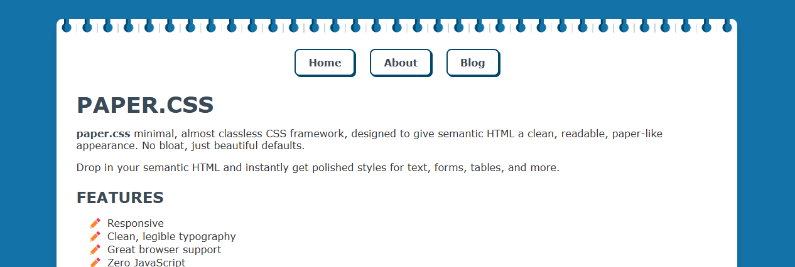

Gokulnathan M
Software Developer : Building lean software | Chasing performance and efficiency | Would’ve been a cook in alt-timeline.
About Me:
I'm someone who finds joy in understanding what most overlook — how memory is managed, how threads are scheduled, how data lives in RAM. I’m drawn to the internals of software, not just to use it, but to appreciate how it works. I build things that carry meaning, not just features. I write to think, tweet to connect, and learn to dig deeper — always chasing the kind of knowledge that doesn’t show up in mainstream tutorials.
Technologies that i have on :
- .Net 6 Web Api, .Net 8 Web Api
- Redis
- PostgreSQL
- Angular 14 & 16
- Azure :
- Azure blob
- Azure Functions
- Application insights
- Azure webapp
Certifications Done : AZ-204
Projects :
Paper.css | CSS framework

Paper.css minimal, almost classless CSS framework, designed to give semantic HTML a clean, readable, paper-like appearance. No bloat, just beautiful defaults.
Demo Link : Paper.css
GitHub Repo : Link
Career History
Accenture | Senior software engineer ( Nov'23 - Present )
- Led a team of 3 developers in the revamp of two critical modules, optimizing them to handle large datasets, including 100,000 records across multiple PostgreSQL databases
- Led a team of 5 developers to overhaul the Redis + API architecture, achieving a 70% performance improvement and enhancing application efficiency for large data volumes, resulting in a better user experience.
- Conducted performance tuning and optimization of SQL queries, leading to a 60% reduction in query execution times and improved application responsiveness.
- Technologies used: .Net 6 Web Api, Redis, PostgreSQL, Angular 14, Azure.
Accenture | Software engineer ( Jun'22 - OCT'23 )
- Worked in the core development team to extract industry-specific data from the database and present it in an expandable, customizable roadmap format, enabling SMEs to effectively manage multiple clients using our roadmap tool.
- To enhance overall application performance, I suggested and implemented a Redis-based approach, resulting in a significant improvement in user experience.
- Technologies used: .Net 6 Web Api, Redis, PostgreSQL, Angular 14, Azure.
Accenture | Associate software engineer ( Nov'20 - May'22 )
- Worked as a C# developer in an E-commerce website where I can provision services provided by Accenture, Responsible for creating API documentation, performing unit testing to ensure code quality, and assisting senior developers with new feature development.
- Developed a python Data migration tool which helped with automating script generation for Elasticsearch DB
- Technologies used: .Net 3 Web Api, PostgreSQL, Angular 12, Elasticsearch, Python.